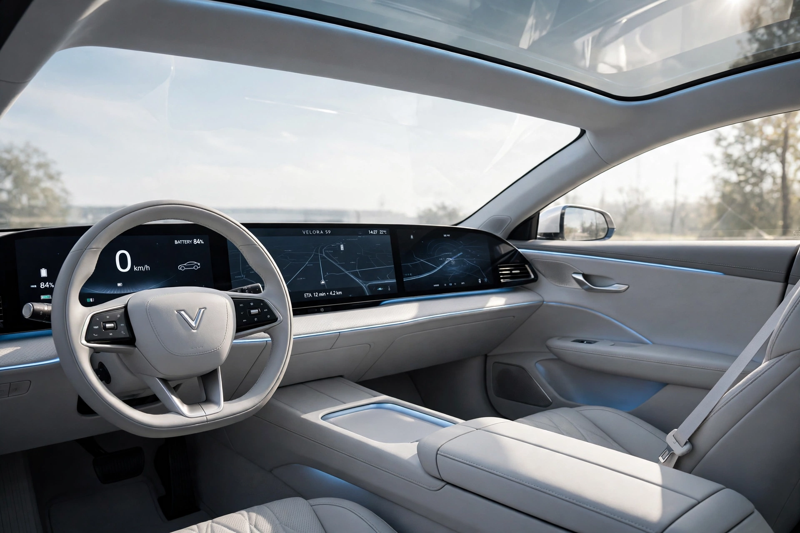
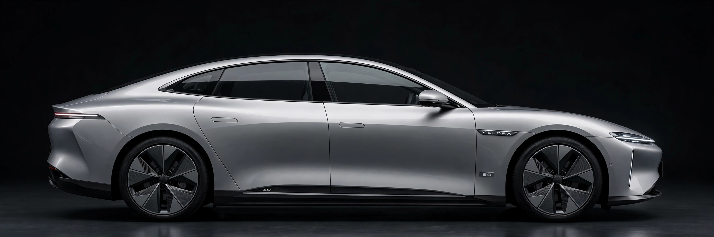
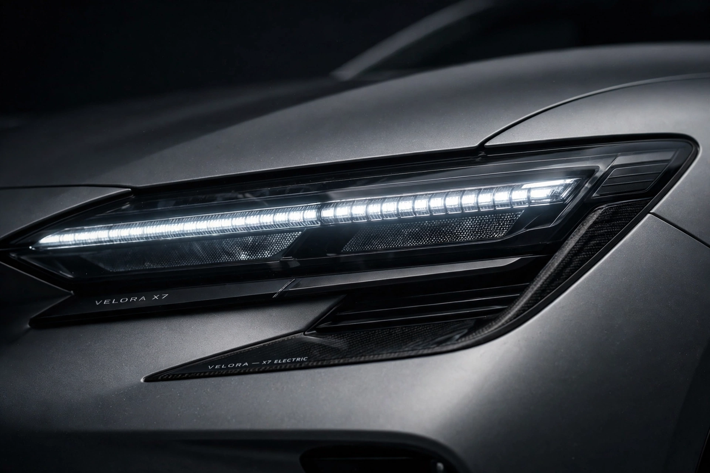

01 / INTERIOR
Um novo ponto de vista.
Um ambiente criado para acolher cada momento da jornada.
Design que emociona. Tecnologia que aproxima.
O futuro da mobilidade começa aqui.
Acreditamos que cada trajeto pode ser uma experiência. Por isso, imaginamos uma nova relação entre pessoas, tecnologia e movimento.
Descubra nossa visão ↗Duas formas de olhar para o futuro.
Uma nova maneira de chegar lá.

DESIGN EM MOVIMENTO / 01Linhas fluidas, presença marcante e uma experiência pensada para transformar cada chegada.
Uma silhueta esculpida pelo movimento. Cada linha expressa a harmonia entre intenção e emoção.
Sinta a experiência ↗Mais do que chegar. É sobre como
você se sente em cada instante.

Um ambiente criado para acolher cada momento da jornada.

Uma identidade que se revela em cada encontro.
Descubra uma nova perspectiva sobre o movimento.
Explore os modelos ↗